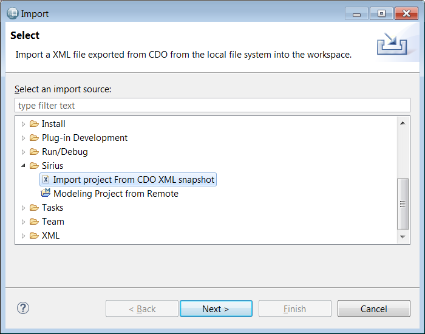
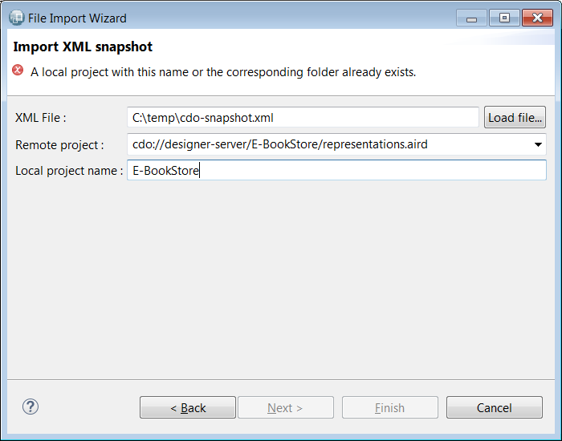

Copyright © 2008, 2026 Obeo - All rights reserved. This program and the accompanying materials are made available under the terms of the Eclipse Public License v2.0
A CDO server, such as the one provided by Obeo Designer Team, can export the contents of a repository in XML format.
Reading a CDO XML snapshot without the importer requires creating a CDO server, loading the file into it and importing a project into the workspace from Obeo Designer Team.
The CDO XML Snapshot Importer performs these steps automatically. Select an XML file and a project to import. The importer creates the local project and manages the embedded CDO server in the background.
To create a snapshot, enter the following command in the CDO server console. Replace
<repository-name> with the name of the repository to export and
<filename> with the path to the XML file to create:
cdo export <repository-name> <filename>
Open the importer from the menu:
File > Import... > Sirius > Import project from CDO XML snapshot

In the wizard, use Load file... to select an XML snapshot file. The file is automatically loaded into a newly created embedded CDO server.
The Remote project list is populated with the projects in the repository, and the first project is selected.
A Local project name is suggested from the remote project name. If a project with this name already exists in the workspace, an error message is displayed. Enter a valid local project name to complete the wizard.

Complete the wizard to create a modeling project in the workspace.